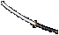
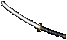
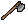
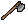
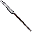
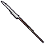

dread sword
[ドレッドソード]


gargish katana
[ガーゴイルカタナ]


gargish bone harvester
[ガーグボーンハーベスター]

gargish cleaver
[ガーグクリーバー]


gargish butcher's knife
[ガーグ肉切り包丁]


gargish talwar
[タルワール]
 



stone war sword
[ウォーソード]
 向き限定
向き限定
glass sword
[グラスソード]

gargish daisho
[ガーゴイル大小]

gargish bardiche
[ガーグバルディッシュ]


gargish scythe
[ガーゴイルサイズ]

dual short axes
[デュアルアックス]


 

gargish axe
[ガーゴイル斧]

gargish axe
[ガーゴイル戦闘斧]

gargish dagger
[ガーゴイルダガー]
 両向き、向き限定
両向き、向き限定
bloodblade
[ブラッドブレード]


shortblade
[ショートブレード]


gargish kryss
[ガーゴイルクリス]


gargish tekagi
[ガーゴイル手鉤]


gargish war fork
[ガーグウォーフォーク]

gargish pike
[ガーゴイルパイク]


gargish lance
[ガーゴイルランス]

dual pointed spear
[デュアルスピア]


 



disc mace
[ディスクメイス]


gargish maul
[ガーゴイルモール]

gargish war hammer
[ガーグウォーハンマー]


gargish tessen
[ガーゴイル鉄扇]


serpentstone staff
[サーペントの石杖]


glass staff
[グラススタッフ]
 全て向き限定
全て向き限定


![platemail [female]](plate07.gif)


 tanglerなど、特別なアイテムでも変成可
tanglerなど、特別なアイテムでも変成可


 神意のサンダルなど、特別なアイテムでも変成可
神意のサンダルなど、特別なアイテムでも変成可


 Britain図書館のメガネなど、特別なアイテムでも変成可
Britain図書館のメガネなど、特別なアイテムでも変成可